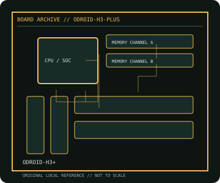

[ INDIVIDUAL COMPONENT // MOTHERBOARDS ]
ODROID-H3+
Intel Alder Lake-N compact SBC, 2022. This record documents the named model and its documented variants; confirm the PCB revision, submodel and firmware on the physical unit.

REVISION WARNING: Similar model names and PCB revisions may have different processors, connectors or firmware. Read the silkscreen and assembly code; use the support files for that exact board variant.
Specifications
| Catalog subcategory | Integrated and compact boards |
|---|---|
| Exact model / era | ODROID-H3+ — Intel Alder Lake-N compact SBC, 2022 |
| CPU and socket / SoC | Intel Processor N6005 (Jasper Lake, four cores) soldered to board; not a replaceable CPU |
| Chipset / platform | Intel SoC platform with integrated UHD Graphics |
| Memory | Two DDR4-2933 SO-DIMM slots, dual-channel, up to 64 GB per Hardkernel specification |
| Slots and connectivity | Two 2.5GbE ports, two HDMI 2.0 outputs, two SATA 3.0 ports with power headers, M.2 NVMe, M.2 E-key, USB 3.0/2.0, eMMC and 24-pin GPIO |
| Firmware | Hardkernel BIOS and OS images are model-specific; follow H3/H3+ firmware and recovery notes. |
Compatibility and revision notes
H3+ differs from H3 in onboard CPU and eMMC configuration. Use DDR4 SO-DIMMs, correct board power supply and verified NVMe/SATA lane guidance.
Socket, connector shape and family branding alone do not establish compatibility. Verify the exact processor list, minimum BIOS, memory population table, power input, dimensions, and shared-lane behavior in the cited manual before installation.
Preservation and repair
Inspect SO-DIMM latch condition, SATA power leads and M.2 standoff. Check that the CPU heatsink is firmly mounted before extended load; record BIOS/OS image version and MAC labels.
For archival preservation, photograph the PCB, labels, connectors and included accessories before cleaning. Record serial/date codes, firmware versions, known faults, prior repairs and test conditions; use ESD-safe handling and do not power a board with loose conductive hardware beneath it.
Sources & further reading
- ODROID-H3+ — product/manual referenceModel-specific platform, board layout and interface reference.
- ODROID-H3+ — support and firmware resourcesSupport documentation; match the PCB revision, CPU support list and firmware release to the physical board.
Manufacturer/model documentation is the primary reference. Where vendor support is archived, match its revision notes to the board and do not cross-flash firmware from a similar product.